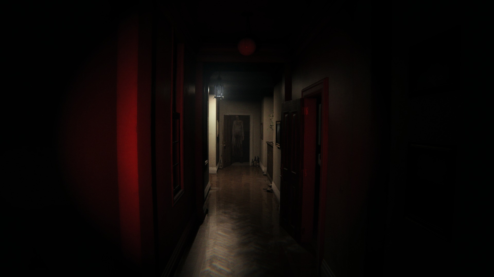

Добро пожаловать
Меня зовут Сипатова Полина, я учусь в ВГУ. Я очень долго думала о теме сайта, потому что вариантов было настолько много, что выбор был слишком тяжелым. Но вот я окончательно определилась, поэтому хочу представить свою первую (можно сказать демо) версию сайта по организации квестов.

"Самые страшные монстры не прячутся под кроватью. Они прячутся внутри нас, терпеливо ожидая своего часа."
Здесь, в этих стенах находятся не просто квесты, а настоящие врата. Врата в места, где время течёт иначе, где тени шепчут правду, а свет лжёт. Каждый проект - это новый уровень безумия.
Но хватит лишних слов. Единственное, что я хочу сказать: запомните - некоторые двери лучше не открывать...
Готовы ли вы сделать шаг?
Стоит лишь ступить на порог и пути назад не будет.